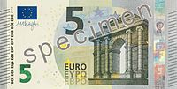
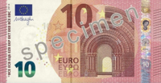
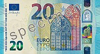
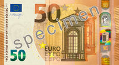
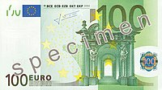
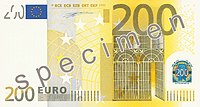
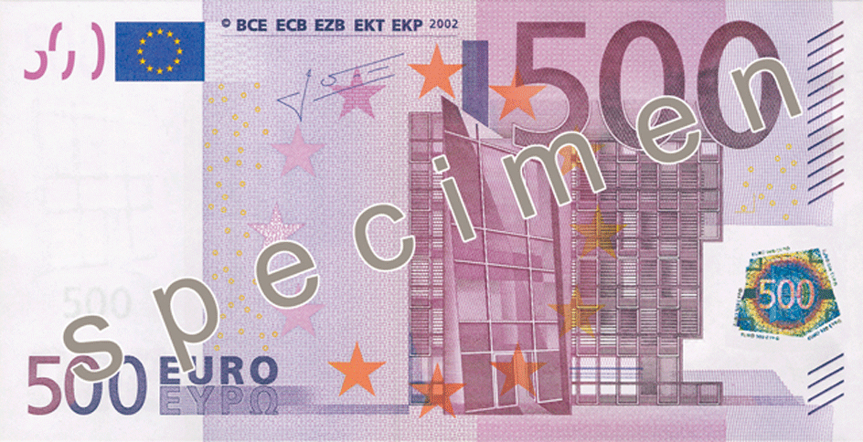

|
| Nominalas |
Pateikiamas
atvaizdas |
Banknoto
pavyzdys |
| 5 |
Mažiausios vertės euro
popierinis pinigas. Pagrindinės spalvos yra pilka ir jos atspalviai. Ši kupiūra yra mažiausia pagal matmenis (120×62 mm). Vaizduoja klasikinės architektūros tiltus ir arkas. Sukurta: 2013 m. sausio 10 d. |
 |
| 10 |
Antras mažiausios vertės
euro popierinis pinigas po penkių eurų banknoto. Pagrindinės spalvos yra raudona ir jos atspalviai. Ši kupiūra yra antra pagal matmenų dydį (127×67 mm). Vaizduoja romaninės architektūros tiltus ir arkas. Sukurta: 2014 m. rugsėjo 23 d. |
 |
| 20 |
Trečias euro popierinis
pinigas po penkių eurų banknoto. Pagrindinė spalva yra mėlyna ir jos arspalviai. Ši kupiūra yra trečia pagal matmenų dydį (133×72 mm). Vaizduoja gotikos stiliaus tiltus ir arkas. Sukurta: 2015 m. lapkričio 25 d. |
 |
| 50 |
Ketvirtas euro popierinis
pinigas po penkių eurų banknoto. Pagrindinė spalva yra oranžinė ir jos atspalviai. Ši kupiūra yra ketvirta pagal matmenų dydį (140×77 mm). Vaizduoja Renesanso architektūros pastatus ir statinius. Sukurta: 2017 m. balandžio 4 d. |
 |
| 100 |
Penktas euro popierinis
pinigas po penkių eurų banknoto. Pagrindinė spalva yra žalia ir jos atspalviai. Ši kupiūra yra trečia pagal matmenų dydį (133×72 mm). Vaizduoja baroko ir rokoko stiliaus architektūros pastatus ir statinius. Sukurta: 1996 m. gruodžio 3 d. |
 |
| 200 |
Šeštas euro popierinis
pinigas po penkių eurų banknoto. Pagrindinė spalva yra gelsvai ruda ir jos atspalviai. Ši kupiūra yra trečia pagal matmenų dydį (153×82 mm). Vaizduoja plieno ir stiklo amžiaus architektūros pastatus ir statinius. Sukurta: 1996 m. gruodžio 3 d. |
 |
| 500 |
Septintas euro popierinis
pinigas po penkių eurų banknoto. Pagrindinė spalva yra violetinė ir jos atspalviai. Ši kupiūra yra didžiausia pagal matmenų dydį (160×82 mm). Vaizduoja modernioji XX a. stiliaus architektūros pastatus ir statinius. Sukurta: 1996 m. gruodžio 3 d. |
 |